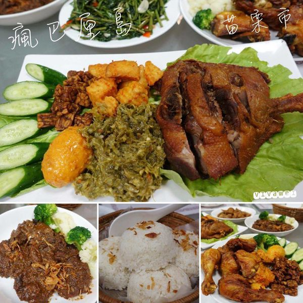
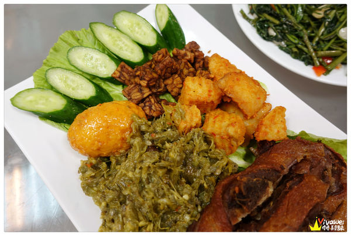

「瘋巴厘島」店家資訊
地址：苗栗市日新街16巷2號
電話：037-375048
營業時間：週三至週日09:00-21:00（週一週二公休）
▲這間在南苗巷弄中的「瘋巴厘島」十分隱藏版，平常還真不會注意裡面有店家！
位置在童裝店的對面，在有鹹酥雞／甜不辣的小攤販旁邊那條巷子裡面！挺隱密的！
▲因為是晚上造訪，拍的照片比較黑，所以在白天經過時又補了張白天的照片
（不過他週一和週二沒有營業，別撲空了）
這間店原先的位置在金玉滿堂對面，似乎在苗栗也開了好一段時間，
原店址現在已經變成「哈拉居酒屋」了，！
▲這是店內的內用區，環境普通，會不時看到外籍人士進進出出，二樓似乎還有提供他們唱歌呢！
店內的生意其實不錯，不過很少見到台灣面孔，當天發現幾乎都是印尼當地人會來捧場用餐。
▲這是店內的菜單，供參考，店家會給張單子自行填寫要點的餐！
▲另外還有提供便當類的餐點，單價比較平實。
▲另外有一張menu，上面有七種餐點是店家的套餐類，若點4-7號餐會免費附贈附餐！
（我們當天在這張menu上點了份沙嗲，但是吃到最後都沒送來，才發現所有的餐都要寫在他們給的單子上！）
▲店內的貨架上有販售在地的零嘴。
▲店內的冰櫃裡面有販售啤酒和開水，因為店裡面沒有提供開水，所以我們有買水！
這邊的水價格是十元，還蠻便宜的，因為餐點都挺重口味的，不能少了開水阿～～～
▲桌上擺放著餐具和紙巾，還有一盤糖果！
原本以為是印尼當地的糖果，仔細一看發現有寫日文或韓文字。
▲開水的部份是十元一罐，這邊餐點走重口味路線，所以就買個水來搭配吧！
▲今天和我的家人們一起用餐，謝謝他們陪著我到處吃喝踩點，
也要一起開發沒有吃過的餐廳。
「瘋巴厘島」這樣印尼風味的餐廳在苗栗市還真的沒見過，
於是我們就鼓起勇氣的嘗試看看～～～
▲白飯是一人一碗，他們的飯份量好多啊！媽媽喜歡這樣子的飯，
覺得有點像是糯米飯的感覺，蠻特別的！
吃起來很香，而且因為印尼料理都加入了各種香料，
是比較重口味的餐點，都很需要配飯啊！
▲因為我本身沒有特別喜歡羊肉，所以不會特別嘗試，
但是有吃羊肉的家人表示這道還不錯，
沒有什麼羊騷味，也許是香料的味道太重了，
蓋過了羊騷味吧！大嫂覺得這道是她今天比較喜歡的：）
▲巴東牛肉算是今天家人接受度最高的一道餐點了，牛肉很嫩，
厚度也夠！香料味道不會太重，吃起來還不錯。
▲這個炒空心菜好像是點巴東牛肉附贈的，
不過這道菜超級鹹，完全NG阿！
▲當時在MENU上看到「髒鴨子」這個品項，我完全不會想點來吃，
但是哥哥和媽媽都堅持要吃這個才特別！
於是上網搜尋了一下，發現「髒鴨子」是很多人到巴里島必吃的餐廳！
講白了就是「油炸鴨子」！
▲髒鴨子的份量好多阿，端上來的時候肉沒有完全切開，
我想要用竹筷子分離時筷子就硬生生斷了...
髒鴨子的肉質有些乾澀，可以搭配一旁的配料食用，
但是我們實在吃不習慣這樣的組合阿～～～

▲髒鴨子旁邊的配料，家人一致認同最好吃的就屬小黃瓜了！！！
綠綠的那個吃起來像是茄子的口感，
總之每個都嚐一口後都不太知道自己到底吃了什麼～～～
▲南島炸雞的份量很多，一旁也有附上可以搭配的配料，
相較於髒鴨子來說，個人比較喜歡炸雞！
不過吃這份炸雞還是要挑部位的，雞腿肉的部份蠻嫩的，
不過除了雞腿肉以外的就要碰碰運氣了～
▲雞腿很嫩很多汁，還算不錯，但是要搭配一旁的配料，我們還是覺得吃不習慣啊！
▲這是店家的附湯，裡面加入了油蔥酥、香菜和芹菜，就是一碗清湯，感覺要加入貢丸才完整阿！
▲整體來說，這間「瘋巴厘島」的口味很特別，
可能是加入了很多香料，我們家人都吃不習慣啊！
因為我沒有去過印尼或是巴厘島，
也不太清楚他們的道地口味是什麼樣的滋味～～～
不過這樣的餐點很少見，端上桌的賣相還蠻不錯的，
且份量很多，我們五個人點四份都吃不太完，
如果想要嘗試這樣子的異國香料料理，也可以去品嚐看看囉！！！
引用文章:瑋瑋＊美食萬歲